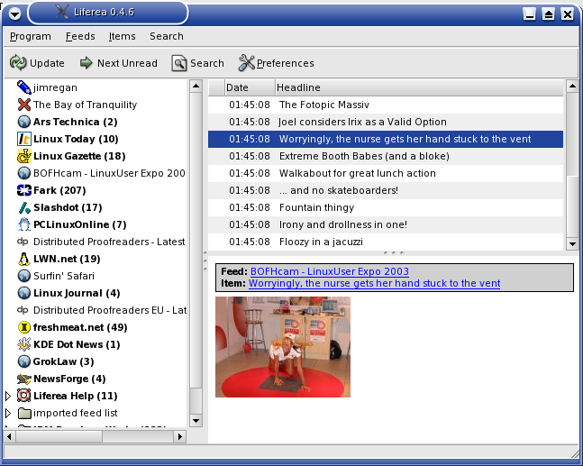
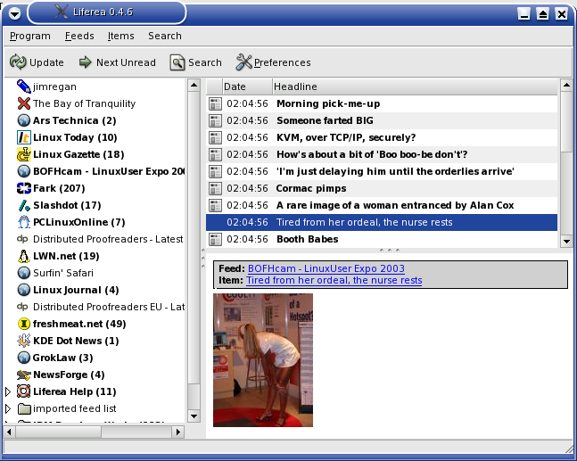

...making Linux just a little more fun!
Beyond shell-type globs, I'd never had much need for regex. So using RSSscrape was a new experience for me.
I picked Ben's blog, mainly because I knew it didn't have a feed. So, I adapted the sample scraper, and after one false start - I was missing a space - I had a working scraper. Yay me, etc!
I decided to have another go. I came across fotopic.net and decided that it was a much simpler example. So, I looked for a collection, and found pictures from LinuxUser Expo 2003, courtesy of BOFHcam, which I remembered from college, and thought it was perfect.
This site has a fairly simple layout:
<td width=25% class="thumbs"> <a href="/p691254.html"><img src="http://193.0.234.78/254000000691.jpg" width=150 height=112 class="thumbs"></a><br/> <div class="thumbs-description">Worryingly, the nurse gets her hand stuck to the vent</div><div class="thumbs-metrics">1600x1200</div> <a href="javascript:addcart(691254,'P',1892);">Buy</a></td></tr> <tr class="thumbs"> <td width=25% class="thumbs"> <a href="/p691255.html"><img src="http://193.0.234.78/255000000691.jpg" width=112 height=150 class="thumbs"></a><br/> <div class="thumbs-description">Tired from her ordeal, the nurse rests</div><div class="thumbs-metrics">1200x1600</div> <a href="javascript:addcart(691255,'P',1892);">Buy</a></td> <td width=25% class="thumbs">
I thought everything was great. I ran the scraper, looked at the RSS it generated, and cheered. Then I decided to look at it in Liferea. 
Hmm. Something was wrong with my scraper. I looked at the RSS again, to make sure it came out OK. Then, I looked at the scraper. I checked the regex, checked the HTML. I checked that special characters were escaped, that the missing lines had the same amount of tabs - everything looked the same.
Until it slowly dawned on me that though the width and height attributes had the same values in each line, in some they were switched. D'oh! One quick fix later, and I had the correct results: 